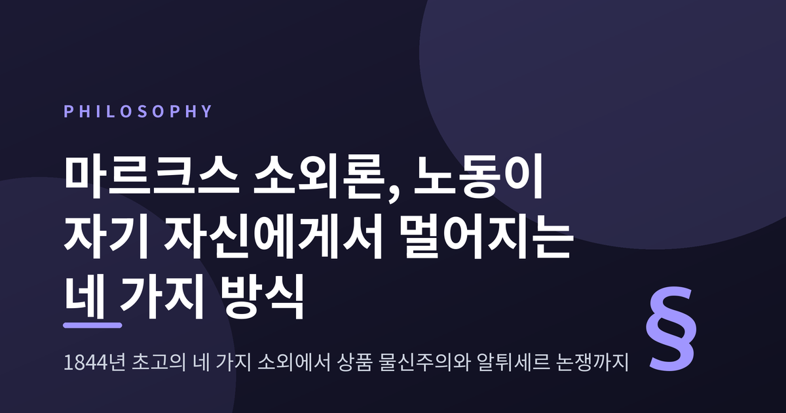
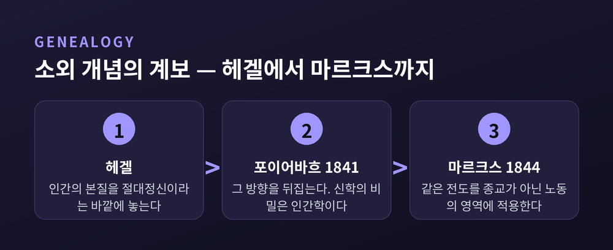

마르크스 소외론, 노동이 자기 자신에게서 멀어지는 네 가지 방식

이번 글에서는 마르크스의 소외론을 사상사적으로 정리해 보겠습니다. 『1844년 경제학·철학 초고』의 네 가지 소외에서 출발해, 그 개념이 어디서 왔고 후기 저작에서 어떻게 달라졌으며 오늘날 어떤 논쟁 속에 놓여 있는지까지 살펴보려 합니다. 특정 입장을 옹호하거나 비판하기 위한 글은 아닙니다. 해석이 갈리는 지점은 갈리는 대로 적어 두겠습니다.
■먼저 '소외'라는 말부터
소외는 마르크스가 만든 말이 아닙니다.
영어 'alienation'은 15세기 초에 이미 세 갈래 뜻을 갖고 있었습니다. 신으로부터 멀어짐, 소유권의 법적 이전, 그리고 정신의 착란입니다. 19세기까지 정신과 의사를 'alienist'라 부른 것도 이 마지막 갈래의 흔적입니다.
철학적으로 소외를 제대로 다룬 첫 사례는 오히려 프랑스어권에 있습니다. 루소는 『인간 불평등 기원론』에서 사회적 조건에 의해 부풀려진 자기애가 결국 자기 본성에서 갈라져 나온 삶으로 나타난다고 진단했습니다.
스탠퍼드 철학백과는 여러 전통을 관통하는 최소 정의를 이렇게 제시합니다. "서로 속해 있어야 할 주체와 객체의 문제적 분리." 이 한 줄을 기억해 두시면 이후 논의가 훨씬 수월해집니다.
독일어에는 단어가 둘 있다는 점도 짚어 둘 만합니다. 헤겔은 재산의 양도를 말할 때 보통 Entäusserung(외화)을 쓰고 Entfremdung(소원해짐)을 쓰지 않았습니다. 어원상 '낯선(fremd)'과 이어지는 쪽은 후자뿐입니다. 이 미세한 구별이 뒤에 가서 큰 차이를 만듭니다.
■네 가지 소외 — 1844년의 설계도
마르크스가 파리에서 1844년 4월부터 8월 사이에 쓴 노트가 있습니다. 그중 「소외된 노동」이라 이름 붙은 대목이 소외론의 출발점입니다.
여기서 자본주의 아래 노동자가 겪는 소외는 네 겹으로 제시됩니다.
첫째, 생산물로부터의 소외. 만들어지자마자 생산자에게서 떨어져 나갑니다. 마르크스는 이렇게 적었습니다. "노동자는 부를 더 많이 생산할수록 더 가난해진다." 생산할수록 자기 생산물의 지배, 곧 자본의 지배 아래로 떨어진다는 것입니다.
둘째, 생산 행위로부터의 소외. 노동이 자기실현이 아니라 견뎌 내야 할 고통으로 경험됩니다. 일이 끝나야 비로소 자기 자신으로 돌아오는 상태입니다.
셋째, 유적 존재로부터의 소외. 유적 존재는 개체를 넘어 '종으로서의 삶'을 의식의 대상으로 삼을 수 있는 인간의 능력을 가리킵니다. 그런데 노동자는 자신의 진정한 인간적 힘에 따라서가 아니라 맹목적으로 생산합니다.
넷째, 타인으로부터의 소외. 공동체를 이루는 능력, 자유롭고 의식적이며 창조적으로 일하는 능력이 함께 좌절됩니다. 자기 본성에서 멀어진 사람은 옆 사람에게서도 멀어집니다.
같은 글의 다른 문장 하나가 네 겹 전체를 압축합니다. "인간 세계의 가치 하락은 사물 세계의 가치 증가에 정비례한다."
다만 네 번째 항목은 정리하는 사람에 따라 '타인으로부터의 소외'로도, '자기 인간 본성으로부터의 소외'로도 서술됩니다. 스탠퍼드 철학백과는 후자의 표현을 쓰되 공동체를 이루는 능력의 좌절을 함께 언급합니다. 두 서술은 사실상 같은 곳을 다른 각도에서 가리킨다고 보는 편이 무난합니다.
■헤겔과 포이어바흐가 남긴 것

이 설계도는 하늘에서 떨어지지 않았습니다.
포이어바흐의 『기독교의 본질』(1841)이 유럽에서 큰 반향을 일으켰습니다. 핵심 주장은 간명합니다. 신이란 인간 본성의 심리적 투사라는 것입니다.
방법이 더 중요합니다. 헤겔은 유한한 인간의 성질을 무한한 신의 현현으로 이해했습니다. 포이어바흐는 그 방향을 그대로 뒤집었습니다. 무한한 신이야말로 유한한 인간의 본질적 성질이 바깥에 대상화된 것이라고 본 것입니다. 그는 이를 "신학의 비밀은 인간학이다"라는 문장으로 압축했습니다.
포이어바흐가 보기에 헤겔 철학은 인간의 본질을 '절대정신'이라는 바깥 영역에 놓음으로써 신학적 소외를 철학의 언어로 되풀이합니다.
마르크스에게 이 전도(顚倒)의 조작은 모범이었습니다. 총체적 관념론 체계를 비판하고 해체한 뒤 다시 세워 보였기 때문입니다. 다만 마르크스는 포이어바흐가 그 조작을 끝까지 밀고 가지 않았다고 판단했습니다.
종교에서 벌어진 일이 노동에서도 벌어진다 — 1844년 초고는 포이어바흐의 도식을 경제의 영역으로 옮겨 놓은 작업으로 읽을 수 있습니다.
■흔한 오해 하나: 대상화는 소외가 아니다
여기서 개념 셋을 갈라 두는 편이 좋겠습니다. 오해가 가장 잦은 대목입니다.
대상화는 인간이 자기 능력을 대상 속에 실현하는 일입니다. 목수가 의자를 만드는 것, 글을 쓰는 것이 모두 대상화입니다. 스탠퍼드 철학백과는 분명히 적습니다. 모든 대상화가 소외를 포함하는 것은 아닙니다.
물신주의는 인간이 만든 산물이 자립적 힘을 가진 것처럼 나타나고, 그 앞에 인간이 도로 종속되는 현상입니다. 포이어바흐가 분석한 종교의식이 전형입니다.
소외는 이 둘보다 넓은 개념입니다. 물신주의는 소외가 취하는 여러 형태 중 하나일 뿐입니다.
정리하면 이렇습니다. 세 개념은 부분적으로만 겹칩니다. 그러므로 "노동이 대상이 되는 것 자체가 문제"라는 식의 독해는 마르크스를 잘못 읽은 것입니다. 문제는 대상화가 아니라, 그 대상이 낯선 힘이 되어 돌아와 생산자를 지배하는 특정한 사회적 형태입니다.
■헤겔은 태도를, 마르크스는 제도를
소외를 한 축 더 나눠 보면 두 사람의 차이가 또렷해집니다. 느끼는 소외(주관적)와 실제로 그러한 소외(객관적)입니다.
헤겔이 본 근대 사회는 객관적으로는 이미 '집'입니다. 가족으로, 경제주체로, 시민으로 자기를 실현할 통로가 마련되어 있다고 본 것입니다. 문제는 사람들이 그 사실을 이해하지 못하고 낯설게 느낀다는 데 있습니다. 그래서 헤겔의 처방은 화해, 곧 태도의 변화입니다.
마르크스가 본 자본주의는 다릅니다. 객관적으로도 주관적으로도 소외되어 있습니다. 그래서 제도와 태도 양쪽 모두의 변혁이 필요하다는 결론으로 갑니다.
두 사람이 목표로 삼은 상태는 같습니다. 객관적 소외도 주관적 소외도 없는 사회입니다. 출발점을 다르게 진단했기에 경로가 갈렸을 뿐입니다.
한 가지 흥미로운 예외가 있습니다. 『신성가족』의 한 대목은 자본가가 객관적으로는 소외되어 있으나 주관적으로는 그렇지 않을 수 있음을 시사합니다. 자본가는 그 소외 속에서 오히려 '편안함'과 '강화됨'을 느낀다는 것입니다. 소외의 두 축이 언제나 함께 가지는 않는다는 이야기입니다.
■1867년의 마르크스는 무엇을 말했나
23년 뒤 『자본론』 1권이 나옵니다. 1장 4절의 제목은 "상품의 물신적 성격과 그 비밀"입니다.
마르크스는 상품을 두고 첫눈에 사소해 보이지만 분석하면 "형이상학적 궤변과 신학적 잔소리로 가득 찬 기묘한 물건"이라고 씁니다. 그리고 물신주의를 이렇게 규정합니다. 사람들 사이의 일정한 사회적 관계가, 그들의 눈에는 사물들 사이의 관계라는 환상적 형태를 취하는 것.
상품 세계에서 사람들의 관계는 노동하는 인격들 사이의 직접적 사회관계로 나타나지 않습니다. 인격들 사이의 물적 관계이자 사물들 사이의 사회관계로 나타납니다.
낯익지 않으십니까. 1844년의 '낯선 힘이 되어 돌아오는 생산물'이 여기서 다시 등장합니다.
그래서 해석이 세 갈래로 갈립니다.
- 연속으로 읽는 쪽은 초기의 구도가 더 정교한 형태로 되돌아왔다고 봅니다. 루카치와 코르쉬의 사물화 논의가 이 노선에 섭니다.
- 단절로 읽는 쪽은 인간학적·규범적 어휘가 구조적 분석으로 대체되었다고 봅니다.
- 중간에 서는 쪽은 물신주의를 소외의 하위 형태로 봅니다. 개념이 폐기된 것이 아니라, 특정한 사회형태에 국한된 방식으로 다시 정식화되었다는 독해입니다.
■알튀세르의 '인식론적 단절'
1960년대에 이 문제가 정면으로 쟁점이 됩니다.
루이 알튀세르는 마르크스의 사유에 1845년을 기점으로 한 인식론적 단절이 있다고 보았습니다. 그 지점이 『독일 이데올로기』입니다. 마르크스 자신의 표현으로는 "이전의 철학적(이데올로기적) 의식에 대한 비판"입니다.
알튀세르의 구분은 단순하고 강력합니다. 1845년 이전의 마르크스는 독일 관념론에 뿌리를 둔 포이어바흐적 휴머니즘 위에 서 있습니다. 이후의 마르크스는 모든 철학적 인간학을 이데올로기로 기각하고 근본적으로 새로운 개념들 위에 선 과학입니다.
그가 보기에 이 단절은 소외의 철학, 그리고 헤겔과 포이어바흐에게서 물려받은 인간학과의 결별이었습니다.
논쟁의 시간대도 기록해 둘 만합니다. 1960년 알튀세르가 관련 글들을 발표하면서 시작되어, 1963년에 한 차례, 1965년 『마르크스를 위하여』 출간과 함께 다시 한 번 정점에 달했습니다.
반론도 만만치 않습니다.
단절이 소외라는 주제의 포기를 뜻한다고 본 것이 잘못이며, 오히려 소외야말로 단절의 양쪽을 함께 이해하는 열쇠라는 지적이 있습니다.
더 근본적인 반론은 텍스트사에서 나옵니다. 1844년 초고는 마르크스 생전에 출판된 적이 없습니다. 최초 완간은 1932년 베를린이며, 그중 하나가 모스크바 마르크스-엥겔스 연구소가 편집해 MEGA 제1부 제3권에 실은 판본입니다. 집필로부터 88년이 지난 뒤입니다.
마르첼로 무스토는 1932년 판본의 편집 선택이 마르크스의 의도를 왜곡한 측면이 있고, 그것이 이후 상충하는 해석들을 낳았다고 봅니다. 나아가 '젊은 마르크스 대 늙은 마르크스'라는 대립 구도 자체가 20세기 편집과 수용의 산물일 수 있다고 지적합니다.
예전엔 초고가 마르크스 사상의 숨은 원형처럼 읽혔습니다. 지금은 그 읽기 자체가 하나의 역사적 사건으로 연구됩니다.
마르쿠제는 1932년에 이미 이 출간이 마르크스 연구사의 결정적 사건이 되리라 내다봤습니다. 그 예상은 맞았습니다. 다만 방향까지 맞았는지는 다른 문제입니다.
■소외론이 감당해야 할 부담
균형을 위해 비판도 적어 두겠습니다.
가장 자주 나오는 반론은 본질주의 혐의입니다. 소외론 전체가 유적 존재에 대한 완전주의적 인간관 위에 서 있다는 것입니다. 인간이 근본적으로 사회적이고 창조적인 존재가 아니라면, 노동 과정이나 생산물의 박탈이 우리를 '소외'시킨다는 말 자체가 성립하지 않습니다. 특정한 삶의 방식을 모든 인간에게 최선인 것으로 규정한다는 지적이 여기서 나옵니다. 알튀세르가 개념 자체의 신용을 떨어뜨린 논거도 이것이었습니다.
옹호하는 쪽의 답도 있습니다. 마르크스가 말하는 인간의 본질은 고정된 실체가 아니라 '사회적·역사적 관계들의 앙상블'이라는 유동적 개념이라는 것입니다.
경험적 난점도 남아 있습니다. 스탠퍼드 철학백과는 소외론이 내용·범위·전망 세 측면에서 경험적 어려움을 낳는다는 점을 인정하고, 그 어려움을 해결하지 않은 채 남겨 둔다고 명시합니다. 아직 정리되지 않은 문제라는 뜻입니다.
■지금의 노동을 이 개념으로 볼 수 있을까
소외 개념은 철학 바깥에서도 오래 쓰였습니다.
로버트 블라우너의 『소외와 자유』(1964)가 대표적입니다. 그는 기술 수준이 다른 네 산업을 사례연구했습니다. 인쇄(수공예적 기술), 섬유(기계 감시), 자동차(조립라인), 화학(연속공정)입니다.
결론은 역U자 곡선이었습니다. 기술 발전이 소외에 미치는 영향은 직선이 아니라 곡선이라는 것입니다. 재량이 큰 인쇄에서 소외가 가장 낮고, 섬유에서 높아지며, 조립라인에서 정점에 이르고, 연속공정에서 다시 낮아집니다. 화학 노동자는 전문 지식을 갖고 작업 환경에 상당한 통제력을 행사하기 때문입니다.
주목할 점은 강조점이 옮겨졌다는 사실입니다. 마르크스에게 소외의 원인은 생산의 사회적 관계였지만, 블라우너는 기술의 종류를 주요 변수로 놓았습니다.
이 테제가 정설은 아닙니다. 1982년에는 110개 산업 조직과 245명의 재훈련 인쇄공을 대상으로 역U자 가설이 검증되었고, 1985년에는 섬유산업 자료로 블라우너가 재평가되었습니다. 계속 시험대에 올라온 가설로 보는 편이 정확합니다.
최근에는 플랫폼 노동이 이 개념을 다시 불러냈습니다. 2021년 『Work and Occupations』에 실린 「Über-Alienated」는 긱 노동 환경에서 무력감과 고립이라는 형태로 소외가 관찰된다고 보고합니다. 알고리즘을 '디지털 감독자'로 규정하는 연구들도 있습니다. 플랫폼 기업은 직접적 감독을 상당 부분 내려놓는 대신, 광범위한 모니터링을 통해 간접적 통제를 행사합니다. 배달 라이더 연구는 생산수단과 생산물, 자율성과 주체성에 대한 통제 상실을 함께 보고합니다.
다만 오해는 피해야 합니다. 이들은 마르크스 이론을 분석 틀로 채택한 연구이지, 마르크스 이론이 실증적으로 입증되었다는 뜻이 아닙니다.
철학 쪽의 재정식화도 있습니다. 라헬 예기는 『소외』(독일어 2005, 영역본 2014)에서 소외를 "무관계의 관계"로 다시 규정했습니다. 서로 속해 있어야 할 것들로부터 갈라져 나온 상태, 자기 자신과 세계를 자기 것으로 만들지 못하는 왜곡된 관계라는 것입니다.
전략이 영리합니다. 예기는 문제가 되어 온 '인간 본질' 개념과 소외의 연결고리를 끊으면서도 사회철학적 내용은 보존합니다. 본질주의 반론을 우회하면서 사회적 병리 비판의 자원을 지키는 셈입니다.
■남는 쟁점들
정리하면 이렇습니다. 소외론을 둘러싼 논쟁은 아직 닫히지 않았습니다.
- 초기 마르크스와 후기 마르크스는 단절인가, 연속인가.
- 소외의 네 번째 축은 타인인가, 자기 본성인가.
- 기술은 소외를 키우는가, 줄이는가. 블라우너와 알고리즘 연구는 서로 다른 방향을 가리킵니다.
- 소외를 말하려면 인간 본질을 전제해야만 하는가.
어느 쪽도 아직 결론이 나지 않았습니다. 그래서 이 개념은 여전히 살아 있습니다.
끝으로 한 마디만 더 드리겠습니다.
1844년의 노트는 미완성이었고, 88년 동안 서랍 속에 있었으며, 출간되자마자 20세기 내내 싸움의 한복판에 놓였습니다. 알튀세르는 그것을 과학 이전의 것으로 밀어냈고, 예기는 본질 개념을 덜어낸 채 다시 불러냈습니다.
개념 하나가 이렇게 오래 시달리는 데는 이유가 있습니다 — 사람들이 자기 일에서 자기를 못 찾는 경험이 아직 끝나지 않았기 때문입니다.
마르크스의 답에 동의해야만 그의 질문을 이어받을 수 있는 것은 아닙니다. 소외론이 오늘도 읽히는 이유를 물으신다면, 저는 그 질문이 여전히 유효하기 때문이라고 답하겠습니다.